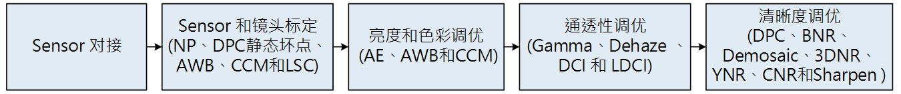
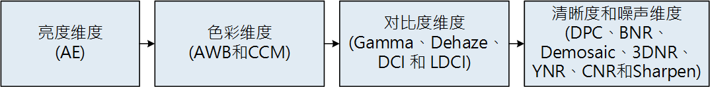
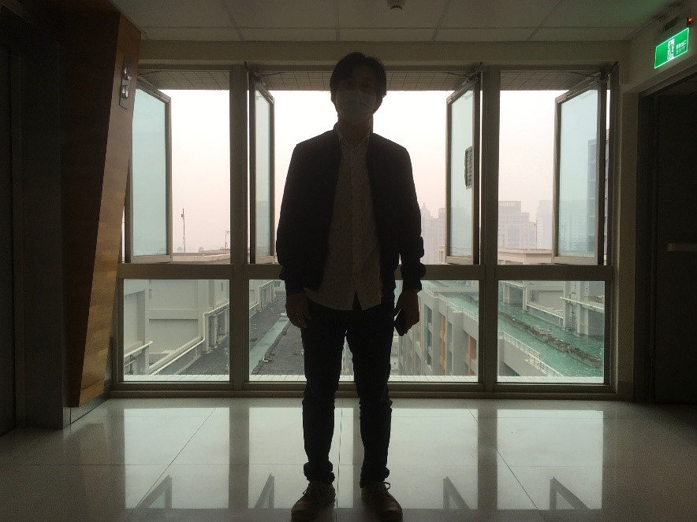
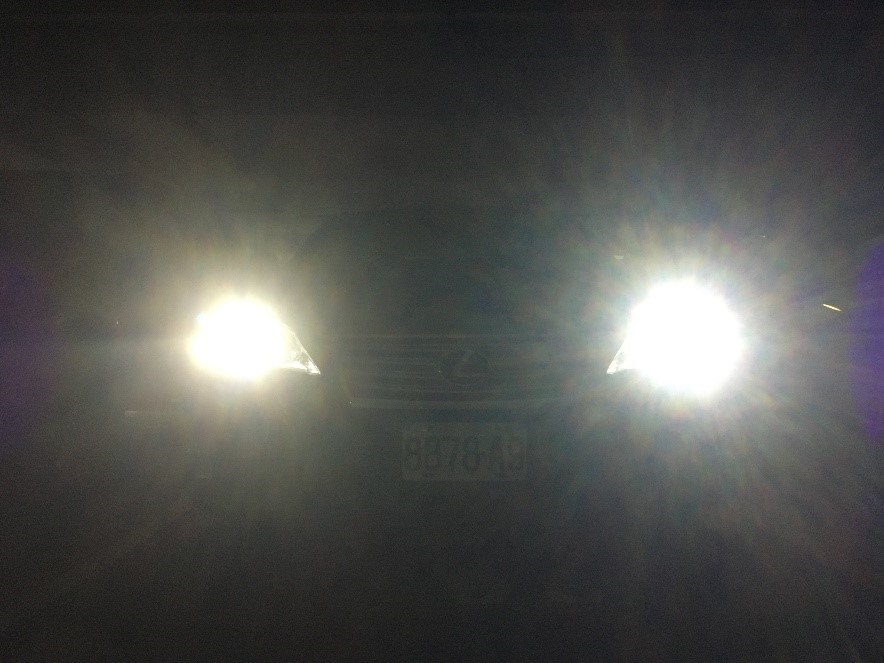

4. 图像质量调优整体概述¶
当前ISP处理器主要面向的应用场景为IPC安防应用场景，包括线性模式和WDR模式。
由于具有安防行业的特殊需求，IPC安防应用场景对图像质量的关注点与一般消费类的应用场景不同。
4.1. IPC应用图像调优概述¶
当前ISP处理器针对IPC安防应用场景分成两种模式:线性模式和WDR模式。
此两种模式关注图像质量的维度包括图像的亮度和色彩的合理性与准确性、图像整体的通透性和清晰度以及噪声的抑制能力等。
除此之外，WDR模式关注的维度还包括整体图像合理的动态范围，即暗区细节能保留和亮区不会过曝。
以下内容分别介绍线性模式和WDR模式的图像质量调优方法和调试原则。
4.2. 线性模式图像质量调优¶
线性模式的图像质量调优方法主要关注的四个维度有图像的亮度、色彩、通透性以及清晰度和噪声，其中与亮度调试相关的模块有AE和LSC等；
与色彩调试相关的模块AWB、CCM和CLUT等；
与通透性调试相关的模块有Gamma、Dehaze、DCI和LDCI等；
与清晰度和噪声抑制相关的模块有DPC、BNR、Demosaic、3DNR、CNR和Sharpen等。
IPC应用场景在线性模式下的图像质量调优框架图如 图 4.1 所示。
{kind=link}

图 4.1 IPC应用场景线性模式的图像调优框架图¶
备注：CV184x不支持DPC静态坏点、不需要做NP标定、YNR模块集成在3DNR中，不再有独立的YNR模块。
4.2.1. Sensor对接¶
Sensor对接主要任务为将处理器与Sensor如IMX327进行对接，确认整体通路是否可正常运作，各个模式是否能切换顺利，各模块的参数在默认值配置下是否合理驱动Sensor，以及AE基本功能等如预期的正常运作。
4.2.2. Sensor和镜头标定¶
Sensor和镜头标定的流程如 图 4.2 所示，所涉及的主要步骤包括黑电平标定、Noise Profile标定、静态坏点标定、LSC标定以及AWB和CCM色彩标定。

图 4.2 Sensor和镜头标定的流程图¶
备注：CV184x不支持DPC静态坏点、不需要做NP标定。
黑电平标定: ISP整体标定流程的第一个步骤是黑电平标定，其具体标定方法请参 黑电平标定方法 章节。
LSC标定: LSC标定的主要目的是消除由于镜头的光学折射不均匀而导致的画面暗角，标定的方法分为 Mesh LSC (MLSC)。在低照下，画面暗角的噪声因为Shading而造成不均匀，可以通过MeshStr进行调整。具体标定方法请参考 LSC标定方法 章节。
AWB标定: AWB标定的原理主要为在多个光源下提取白点信息，即R/G和B/G，计算普朗克色温拟合曲线。由于AWB跟Sensor和镜头的滤光片强相关，因此，每更换镜头或滤光片，皆需要重新标定AWB系数。具体标定方法请参考 AWB标定方法 章节。
CCM标定: CCM标定的主要原理是计算3x3矩阵，使得由sensor抓拍到的24色卡前18个色块所得到的实际颜色数值与期望数值的差距尽可能地小。一般使用三种光源 (D50、TL84和A) 下得到的raw来实现CCM的标定。具体标定方法请参考 CCM标定方法 章节。
在完成以上Sensor与镜头的标定之后，接下来就可以进行ISP各模块的图像质量的调优工作，包含在不同ISO的设定下针对图像质量的优化。
线性模式下所需要调试的场景包括实验室静物场景和室外实际场景。一般而言，必须先在不同照度下针对实验室静物场景完成ISP各模块的参数调优，将图像质量的四个维度包括亮度、色彩、对比度以及清晰度和噪声等调试合理。接着，在室外不同的实际场景进行微调，所涵盖的范围分为白天和夜晚，晴天和阴天天气以及傍晚夕阳等细节丰富的场景等。
线性模式图像质量根据上述四个维度的调试顺序图如 图 4.3 所示。
{kind=link}

图 4.3 图像质量调试的顺序图¶
备注：CV184x的YNR模块集成在3DNR中，不再有独立的YNR模块。
4.2.3. 亮度维度¶
针对亮度维度的调试，主要是调节AE模块的AE 权重表、AE Route、AE目标值以及AE的收敛速度和平滑性等，达到合理的图像整体亮度。在调整AE之前，请先确认黑电平和LSC已完成校正。
步骤1. 确定AE权重表。针对IPC应用场景，一般会关注画面的中间区域，因此AE权重表的中间部分的权重值会高于周边部分。
步骤2. 确定AE Route决定曝光的分配方式，不同的应用场景需要设置不同的曝光时间和增益之间的分配
步骤3. 针对实验室静物场景，调节AE的目标值。建议达到亮区不过曝为基础。
步骤4. 对于不同的应用场景，调试AE的收敛速度和平滑性，使得两者之间取得一个平衡。调节的原则是在防止AE震荡的前提下，尽可能地提高收敛速度。一般可以在实验室静物场景下藉由开关灯进行测试AE的收敛速度和平滑性。
—-结束
4.2.4. 色彩维度¶
色彩维度的调整主要涉及的模块有AWB和CCM。在调整色彩之前，请先确认黑电平和LSC标定完成以及AE模块参数完成调试。
步骤1. 使用实验室灯箱，在D65、D50、A和室外场景的D50色温的光源下针对24色卡进行AWB标定，各自获取白平衡系数。另外，可补充更多光源，如TL84和CWF等可提高标定的准确性。
步骤2. 使用实验室灯箱，在D50、TL84和A三种光源下针对24色卡进行CCM标定，各自生成3x3矩阵。
步骤3. 待AWB和CCM标定完成后，用Imatest测试多种不同光源下的24色卡，初步确认标定得到的AWB系数和CCM矩阵是否满足需求。
步骤4. 在实验室场景获得初步确认以后，还需要大量的室外场景测试，所涵盖的典型场景包括混和光源、晴天和阴天、顺光和逆光以及傍晚夕阳。AWB和CCM具体调试方法请参考 AWB调试方法 和 CCM调试方法 章节。
—-结束
4.2.5. 对比度维度¶
对比度维度的调整主要涉及的模块有Gamma、DCI、LDCI和Dehaze。一般以Gamma为主要调试模块。在调整对比度之前，请先确认黑电平和LSC标定完成、AE模块、AWB和CCM参数完成调试。
步骤1. 通过Gamma参数调整Gamma曲线，使整体图像获得较好的对比度，在亮区和暗区能呈现出细节。Gamma模块的具体调试方法请参考 Gamma调试方法 章节。
步骤2. 如果想进一步进行对比度调优，调试原则以LDCI为主，DCI 和Dehaze为辅。LDCI可以使局部对比度增强，改善画面中的亮区和暗区在细节的表现。LDCI的具体调试方法请参考 LDCI调试方法 章节。DCI和Dehaze的具体调试方法请参考 DCI调试方法 和 Dehaze调试方法 章节。
步骤3. 当Gamma、LDCI、DCI和Dehaze的参数优化以后，接着在实验室灯箱D50光源下测试灰阶卡，保证灰阶数不低于18阶。 图 4.4 为灰阶卡示意图。
步骤4. 在不同的ISO下，针对实验室静物场景适当地调试Gamma、LDCI、DCI和Dehaze，使整体画面的对比度达到需求。在低照度环境下，建议对比度强度不宜过大，以免噪声被增强。
—-结束

图 4.4 灰阶卡示意图¶
4.2.6. 清晰度和噪声维度¶
清晰度和噪声维度的调整主要涉及的模块有DPC、BNR、Demosaic、3DNR、CNR和Sharpen。
随着照度的不同，噪声的表现也会不同。
因此，清晰度和噪声模块的参数会随着ISO联动。
调试原则，建议先以清晰度为优先，在图像中重点细节和纹理能满足的前提下，接着调试降噪模块。
在调整清晰度和噪声之前，请先确认黑电平和LSC标定完成、AE模块、AWB、CCM和Gamma参数完成调试。
步骤1. 首先，使用实验室灯箱，在环境D50光源下且ISO100的条件下，针对分辨率卡调节Demosaic参数直到满足客观需求。 接着，使用此组Demosaic参数，观察在ISO100下的实验室静物场景运行，是否依然能满足要求例如其高频细节能否插值出来，并且进行来回迭代观察调试。 图 4.5 为分辨率卡示意图。
Demosaic具体调试方法请参考 Demosaic调试方法 章节。
步骤2. 一般而言，先调试3DNR使图像中静态区域的噪声扰动收敛至稳定状态且运动区域的拖尾现象达到合理控制，整个画面的清晰度满足要求，其具体调试方法请参考 3DNR调试方法 章节。接下来，整体图像的亮噪和色噪抑制可以分别参考BNR( BNR调试方法 章节) 、CNR模块 ( CNR调试方法 章节)。需注意的是，BNR是raw域的降噪，调试原则是在保留细节的前提下，抑制整体画面的噪声，因此建议降噪强度不宜调试过大。
步骤3. 图像锐化的调试包括3DNR前的PreSharpen模块，以及在3DNR后的Sharpen模块，其参数皆根据ISO进行联动。基本调试准则为在3DNR之前适当地增强图像细节纹理和边缘锐利度，而在避免使噪声被过于加剧的前提下，进一步调试3DNR之后的锐化，增强图像的大边缘，具体调试方法请分别参考( PreSharpen 章节) 和 Sharpen调试方法 章节。
步骤4. DPC模块的动态去坏点功能若是在照度比较好的情况下，建议其相关参数强度设定为最小即可。而在照度稍微低的环境条件下再特别调试DPC动态去坏点参数。
—-结束

图 4.5 分辨率卡示意图¶
4.3. WDR模式图像质量调优¶
WDR模式的图像质量调优方法主要关注的维度有图像的亮度、色彩、动态范围通透性和清晰度等方面，其中与亮度调试相关的模块有AE和LSC等；
与色彩调试相关的模块AWB、CCM、CA Lite、PFR和CLUT等；
与动态范围调试相关的模块有WDR和DRC等；
与通透性调试相关的模块有Gamma、Dehaze、DCI和LDCI等；
与清晰度和噪声抑制相关的模块有DPC、BNR、Demosaic、3DNR、CNR和Sharpen等。
有两种典型场景需要使用WDR模式，即背光场景人脸的亮度提升和夜晚霓虹灯招牌和车灯的强光抑制场景。
IPC应用场景WDR模式的图像质量调优框架图如 图 4.6 所示。

图 4.6 IPC应用场景WDR模式调优框架图¶
备注：CV184x不支持DPC静态坏点、不需要做NP标定、YNR模块集成在3DNR中，不再有独立的YNR模块。
在完成以上所述的标定程序后，接着针对两种典型的应用场景，分别为背光场景人脸的亮度提升和夜晚强光抑制场景，进行WDR模式图像质量调优。
以下针对此两种应用场景分别描述调试方法。
4.3.1. WDR模式背光场景人脸的亮度提升调试方法¶
WDR模式的背光场景设定为图像中包括大面积的亮区和暗区以及背光下的人脸，如 图 4.7 所示。针对背光场景下人脸的亮度提升图像质量的调试方法所关注的维度如下:
{kind=link}

图 4.7 背光下人脸场景¶
4.3.2. 亮度维度¶
WDR模式的亮度调试方法与线性模式整体一致，具体方法请参考 线性模式图像质量调优 的亮度维度小节，但主要差别在于长帧和短帧的曝光时间是由AE的调整来决定。另外，AE的曝光比在不同场景下需自适应调节，决定WDR模式图像的动态范围。
4.3.3. 合成区的运动拖尾维度¶
AE曝光比和WDR模块为主要影响图像中合成区的运动拖尾现象的因素。越大AE曝光比，越容易造成运动拖尾现象。在典型的背光场景下，WDR 2合1模式下所采用的AE的曝光比通常为4-32倍， 在此情况下，WDR模块为造成合成区的运动拖尾的主因。因此，在调试WDR的过程中，通过调试长短帧融合曲线和调试运动检测参数，减少运动拖尾的发生。WDR具体调试方法请参考 WDR 。
4.3.4. 场景的动态范围维度¶
AE曝光比、Map Curve、DRC和Gamma模块为主要影响场景动态范围的因素。Map Curve可以对暗部提亮，同时在一定程度上维持住亮部的对比度，具体调试方法请参考 WDR 。DRC和Gamma可以对暗区亮度做进一步提升。相比于DRC，Gamma提亮暗部的同时，更容易造成对比度的损失。另外，DRC还提供了机制保护逆光人脸亮度。DRC具体调试方法请参考 DRC 。
4.3.5. 色彩维度¶
WDR模式下关于色彩的调试方法与线性模式整体一致，具体方法请参考 线性模式图像质量调优 的色彩维度小节。
4.3.6. 对比度维度¶
WDR模式的对比度调试主要和Map Curve、DRC、Gamma以及Dehaze、LDCI、DCI相关。在通过Map Curve、DRC、Gamma提高动态范围的时候，尽量最小程度影响对比度的损失。之后，可以通过Dehaze、DCI补偿全局对比度，LDCI可以增强局部对比度。
4.3.7. 清晰度和噪声维度¶
WDR模式的清晰度和噪声调试方法与线性模式整体一致，具体方法请参考 线性模式图像质量调优 的清晰度和噪声维度小节。
4.3.8. WDR模式夜晚强光抑制场景调试方法¶
WDR模式的夜晚强光抑制的重点应用是指夜晚的交通场景，如交通十字路口或者闸口等，如 图 4.8 显示一般停车场车牌辨识应用下的场景示意图。
{kind=link}

图 4.8 夜晚强光场景¶
相对于背光应用场景，夜晚强光抑制的交通场景的调试方法所关注的维度如下:
4.3.9. 亮度维度¶
WDR模式在夜晚强光抑制场景的亮度调试方法与背光场景一致，具体方法请参考上述的背光场景对亮度维度的描述。但主要差别在于AE对车灯光晕的影响以及AE的曝光时间对物体运动模糊的影响。通常，车灯里面为过曝区域，WDR会选择短帧，而车灯外围光晕WDR会选择长短帧融合。因此，建议的调试方法为在配置AE权重表时，在中心处靠近车灯附近的权重值需大于画面周围的区域。然后调试AE目标值，来避免短帧的车灯光晕过大。接着，通过AE Route的设置，限制曝光时间，并使用增益为优先，避免车牌发生运动模糊。
4.3.10. 合成区的运动拖尾维度¶
WDR模式下夜晚强光抑制的合成区拖尾的调试方法与背光场景类似，请参考上述的背光场景对合成区的运动拖尾描述来进行调试。
4.3.11. 场景的动态范围维度¶
WDR模式下夜晚强光抑制的场景动态范围的具体调试方法与背光场景类似，请参考上述的背光场景对动态范围的描述来进行调试。这里要注意的是一般夜晚场景下的AE曝光比通常设置为8-16倍左右。
4.3.12. 色彩维度¶
WDR模式下夜晚强光抑制的色彩调试方法与背光场景类似。因此，可参考上述的背光场景对色彩维度的描述来进行调试。
4.3.13. 对比度维度¶
WDR模式下强光抑制的对比度调试方法与背光场景类似，请参考上述的背光场景对对比度维度的描述来进行调试。这里要注意的是需避免DCI的调试使车灯光晕变大，或是Gamma曲线的调整使暗区噪声变大。因此，车灯的光晕大小和暗区噪声与对比度之间的平衡做一个折衷的调试。
4.3.14. 清晰度和噪声维度¶
WDR模式下强光抑制的清晰度和噪声调试方法与背光场景类似，请参考上述的背光场景对对比度维度的描述来进行调试。需要注意的是适当地调试3DNR和YNR来平衡运动区域的噪声与拖尾现象，避免影响车牌的识别。